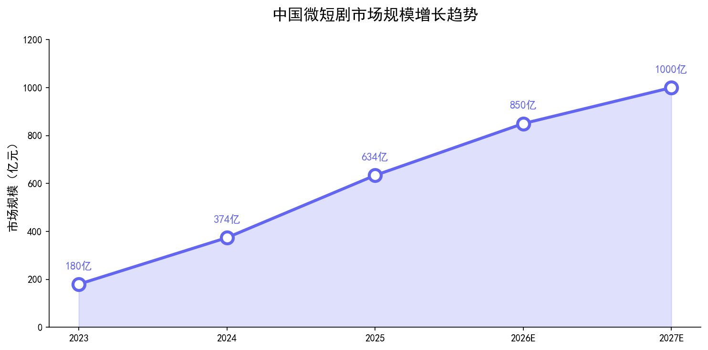

快节奏时代的产物走向正轨，AI辅助创作开辟新赛道
短剧已经从野蛮生长走向正轨。2025年中国微短剧市场规模正式突破634亿元，预计2027年将超过1000亿元。以下是增长趋势：

💡 关键洞察： 短剧市场从2023年的180亿元增长到2025年的634亿元，三年增长3.5倍。AI辅助创作正在降低制作成本，提高产出效率。
入局机构爆发式增长，用户接受度大幅提升。流量投放疯狂，追求半个月内回本。
广电总局加强监管，低俗内容下架。行业开始从"量"转向"质"，精品短剧涌现。
AI工具开始用于剧本生成、角色设计、分镜制作，降低制作成本30-50%。
字节旗下红果短剧成为最大平台，孵化作品数量较年初增长近4倍，130余部播放破10亿。
围绕短剧制作、出海、创意的AI公司涌现，融资事件至少9起，总金额超亿元。
1. AI剧本生成：用ChatGPT/Claude生成剧本初稿，编剧在此基础上修改，效率提升3-5倍。
2. AI分镜/视觉：用Midjourney/可灵生成分镜和概念图，导演可以提前"看到"成片效果。
3. AI配音/翻译：AI配音技术让短剧快速出海，多语言版本零成本制作。
4. AI数据分析：分析用户观看数据，预测什么题材会火，指导创作方向。
1. AI短剧制作工具：做一个专门针对短剧行业的AI工具（剧本生成+分镜+配音一体化），比通用工具更有价值。
2. 短剧出海服务：把中国短剧翻译成阿拉伯语、西班牙语、印尼语，通过TikTok、YouTube Shorts分发。
3. 短剧营销：做短剧切片分发、投流优化，帮短剧公司获取更多用户。
4. 知识付费：教别人怎么用AI做短剧，市场需求巨大（很多传统影视从业者想转型）。